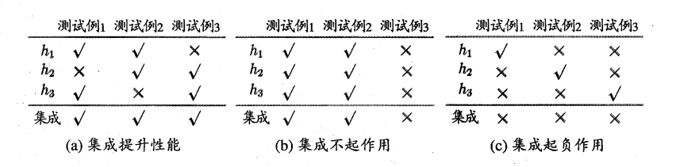

本文内容主要参考了 [^1] [^2]
集成学习简介
我们在机器学习问题中，往往想得到一个兼具准确性和普遍性的模型。然而这两者往往是冲突的，我们通常得到是具有偏好的模型。集成学习的想法是得到一组可能具有偏好性的个体模型，然后再用某种策略将这些个体模型结合起来。
一般有两种集成，同质(homogeneous)的，以及异质(heterogeneous)的。前者指的是集成中的学习器是同种类型的，此时个体学习器被称为“基学习器”，对应的学习算法称为“基学习算法”；而后者则由不同的学习算法生成，此时个体学习器被称为“组件学习器”
可以先观察一种简单的集成策略，投票，即少数服从多数的策略。记第 i 个学习器为 hi，从下图可以看出，在采用投票策略时，不同的学习器对集成的影响

如果真实函数为 f，T 个基分类器集成后的分类器为 H，且每个基分类器错误率均为 P(hi(x)=f(x))=ϵ，如果假定基学习器误差相互独立，那么
P(H(x)=f(x))=k=0∑⌊2T⌋(kT)(1−ϵ)kϵT−k
然后通过 Hoeffding 不等式 [^3] 可以得到
P(H(x)=f(x))≤exp(−21T(1−2ϵ)2)
因此分类器数目增大，错误了会呈指数级下降。但是上述推断基于相互独立的假设的。
西瓜书如是说：
根据个体学习器的生成方式，目前的集成学习方法大致可分为两大类，即个体学习器问存在强依赖关系、必须串行生成的序列化方法，以及个体学习器间不存在强依赖关系、可同时生成的并行化方法;前者的代表是 Boosting ，后者的代表是 Bagging 和"随机森林" (Random Forest).
集成学习方法
Bagging
先介绍一些训练集和测试集划分的 Bootstrap 方法。现在有一个大小为 m 的数据集，我们执行 m 次有放回的数据采样，这些采样出来的结果组成一个包含 m 个样本的数据集 D′。由于采样的过程是重复的因此，数据有 (1−m1)m 的概率不被采样，因此 D 中的数据没在 D′ 中出现的比例为 m→∞lim(1−m1)m=e1，最后 D′ 做训练集，D′ 做验证集。其实这里的原理还不是很懂，以后再研究研究。
Bagging 就是进行 T 次这样的采样，然后基于每个采样学习一个基学习器，然后将他们进行结合。结合方法通常是，对分类采取投票，对回归采取均值。从这个方法的描述其实就可以看出，这是一个并行的算法。
随机森林就是一种特殊的 Bagging 方法
Boosting
统计学习方法中如是说：
历史上，Kearns和Valiant首先提出了“强可学习(strongly learnable)”和“弱可学习(weaklylearnable)”的概念。指出:在概率近似正确(probably approximately correct，PAC)学习的框架中，一个概念(一个类)，如果存在一个多项式的学算法能够学习它，并且正确率很高，那么就称这个概念是强可学习的;一个概念如果存在一个多项式的学习算法能够学习它，学习的正确率仅比随机猜测略好，那么就称这个概念是弱可学习的，非常有趣的是Schapire 后来证明强可学习与弱可学习是等价的，也就是说，在 PAC 学习的框架下，一个概念是强可学习的充分必要条件是这个概念是弱可学习的
因此当我们找到了“弱可学习算法”后，我们应该能把他提升为“强可学习算法”。Boosting 的想法是：从初始训练集训练一个基学习器，然后让基学习器做错的样本在下一次训练中受到更多关注，即有侧重的学习，Boosting 是一个串行生成基学习器的算法。Boosting 的一个代表算法是 AdaBoost
先介绍算法，算法流程为：
- 初始化样本权重为 wi=1/N,i=1,2,⋯,N
- 对每个迭代步骤 m=1 到 M
- 在用权重 wi 调整过的训练样本上，训练分类器 Gm(x)
- 计算加权错误率
errm=∑i=1Nwi∑i=1Nwi1(yi=Gm(xi))
- 计算投票权重 αm=log((1−errm)/errm)
- 对每个样本 i 更新权重为
wi←wi⋅exp[αm⋅1(yi=Gm(xi))],i=1,2,⋯,N
- 输出预测结果 G(x)=sign[∑i=1NαmGm(x)]
现在分析这个算法的原理[^4]。首先我们的想法是需要从样本中训练出一个最开始的基学习器 G1(x)，刚开始时所有样本的权重都是 wi=1/N，然后我们下一次的迭代都要在上一次的迭代上修改权重。假如我们计算到第 m 轮了，那么我们希望这 m 个基学习器组合后出的“强学习器" fm(x) 效果最好，我们把他看成是基函数的加性展开，即
fm(x)=k=1∑mβkGk(x)
这是一个迭代、逐步优化的过程，因此第 m 轮次时，前面的 m−1 轮已经确定了，于是
fm(x)=fm−1(x)+βmGm(x)
为了让 fm(x) 的效果最好，我们需要最小化该函数的损失函数
βm,Gm=β,GargminL(y,fm−1(x)+βG(x))
adaboost 的损失函数为指数损失函数 L(yi,f(x))=exp(−yif(x))，因此
βm,Gm=β,Gargmini=1∑Nexp[−yi(fm−1(x)+βG(x))]=β,Gargmini=1∑Nwiexp(−yiβG(x))=β,Gargmin[exp(−β)yi=G(x)∑wi+exp(β)yi=G(x)∑wi]=β,Gargmin[exp(−β)yi=G(x)∑wi+exp(β)(i=1∑Nwi−yi=G(x)∑wi)]=β,Gargmin[yi=G(x)∑wi(exp(−β)−exp(β))+exp(β)i=1∑Nwi]=β,Gargmin[(exp(−β)−exp(β))i=1∑Nwi1(yi=G(x))+exp(β)i=1∑Nwi](1)
(1) 处做了一个换元 wi=exp(−yifm−1(x))，对上面的(1)求偏导
∂β∂L=−exp(−β)yi=G(x)∑wi+exp(β)yi=G(x)∑wi⇒βm=21ln∑i=1Nwi1(yi=G(x))∑i=1Nwi1(yi=G(x))Gm=Gargmini=1∑Nwi1(yi=G(xi))
如果记加权误差率为
errm=∑i=1Nwi∑i=1Nwi1(yi=G(xi))⇒βm=21lnerrm1−errm
由于 wi=exp(−yifm−1(x))，故 wi(m+1)=wi(m)exp(−yiβmGm(xi))
References
[^1]:机器学习 周志华
[^2]:https://github.com/datawhalechina/pumpkin-book
[^3]:Hoeffding’s inequality - Wikipedia
[^4]:提升方法